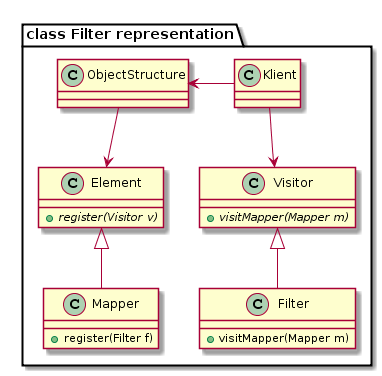
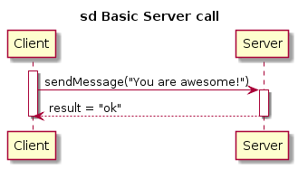

Metodika tvorby a údržby UML diagramov prostredníctvom PlantUML¶
PlantUML¶
PlantUML je jednoduchý program na tvorbu UML diagramov prostredníctvom ich textového opisu. K samotnému programu prislúcha aj rozsiahla dokumentácia.
PlantUML je voľne dostupný na stiahnutie z oficiálnej stránky, prípadne je možné na otestovanie použiť aj jednoduchú web aplikáciu.
Pre plnohodnotné využitie je potrebné mať taktiež nainštalovaný Graphviz.
Tiež ponúka možnosť integrácie s viacerými textovými editormi a wiki stránkami.
Pravidlá pre tvorbu súborov¶
- Každý diagram sa nachádza v samostatnom textovom súbore (koncovka .txt, resp .wsd pri použití integrácie so sublime text).
- Vygenerovaný diagram má identický názov ako prislúchajúci textový súbor (koncovka .png).
- Názvy súborov sú po anglicky.
Užitočné príkazy a postupy¶
Odstránenie duplicity pomocou Preprocesoru¶
Pri písaní diagramov, ktoré obsahujú komplikované vzťahy medzi entitami môžeme naraziť na situáciu, kde budeme veľa krát za sebou písať ten istý názov triedy alebo metódy. S využitím makier preprocessoru môžeme túto duplicitu ľahko odstrániť.
@startuml
'Bez proprocesoru
package "class Filter representation" {
class ObjectStructure
class Element {
+{abstract}register(Visitor v)
}
class Mapper {
+register(Filter f)
}
class Klient
class Visitor {
+{abstract}visitMapper(Mapper m)
}
class Filter {
+visitMapper(Mapper m)
}
ObjectStructure -down-> Element
Mapper -up-|> Element
ObjectStructure <-left- Klient
Klient -down-> Visitor
Filter -up-|> Visitor
}
@enduml
@startuml
'S preprocesorom
!define o(x) ObjectStructure
!define e(x) Element
!define m(x) Mapper
!define k(x) Klient
!define v(x) Visitor
!define f(x) Filter
package "class Filter representation" {
class o()
class e() {
+{abstract}register(v(x) v)
}
class m() {
+register(Filter f)
}
class k()
class v() {
+{abstract}visitMapper(m(x) m)
}
class f() {
+visitMapper(m(x) m)
}
o() -down-> e()
m() -up-|> e()
o() <-left- k()
k() -down-> v()
f() -up-|> v()
}
@enduml
V oboch prípadoch bude výsledok nasledovný:
V druhom prípade sa rozhodne menej napíšeme a máme možnosť meniť použité názvy tried na jednom mieste namiesto toho aby sme ich museli meniť všade. Stojí za poznámku, že každé definované makro musí mať parameter (v našom prípade x, z ktorého ajtak nečítame). Viac o Preprocesore na tejto stránke.
Použitie aliasov v sekvenčnom diagrame¶
V sekvenčných diagramoch odporúčame pri definovaní volaní medzi objektami používať aliasy (skratky). Ich princíp je analogický s predchádzajúcim makrom avšak sú ešte o niečo prehladnejšie. Aliasy nie sú však podporované v class diagrame.
@startuml
participant Client as c
participant Server as s
title sd Basic Server call
activate c
c -> s: sendMessage("You are awesome!")
activate s
s --> c: result = "ok"
deactivate s
deactivate c
@enduml
Výsledok:
Užitočnosť týchto skratiek (a makier) pochopiteľne narastá s narastajúcou komplexitou daného diagramu.
Pravidlá pre súborovú štruktúru¶
Samotné UML diagramy je potrebné rozdeliť do prehľadnej súborovej štruktúry:
- projekt (názov projektu, napr. 3dsoftviz)
- doc (inštalačná dokumentácia, vygenerovaná dokumentácia atď.)
- uml
- structural
- class diagrams (korešpondujúce s reálnym kódom)
- component diagrams
- behavioral
- activity diagrams
- use-case diagrams
- sequence diagrams
- state diagrams
- structural